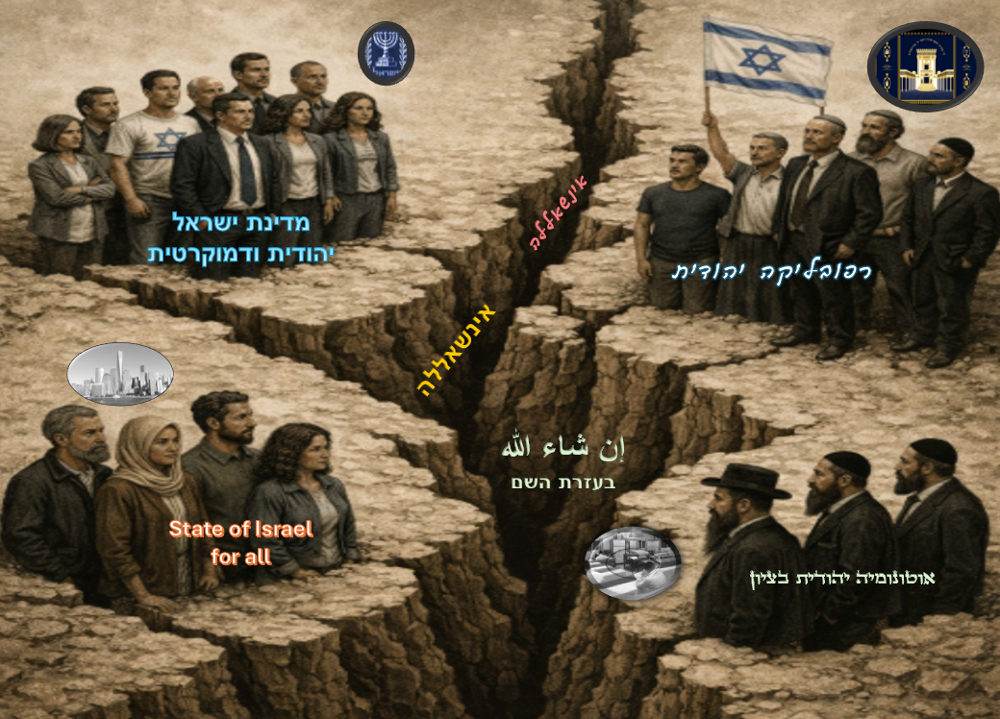

המילה "אינשאללה", כפי שנאמרה על ידי לוסי אהריש בטקס שבו קיבלה את אות אבירת איכות השלטון, לא נשמעה לרבים בישראל כמילה תמימה. בעיני תומכיה זו הייתה קריאה טבעית, כמעט מתבקשת, לכך שערביי ישראל יממשו את זכאותם וחובתם הדמוקרטית. בעיני מתנגדיה, זו הייתה אמירה טעונה, מתריסה, ואולי אפילו מכוונת. מכאן התפוצצה סערה רחבה, שחצתה עיתונות, רשתות חברתיות, משפט, רחוב ופוליטיקה.
1. רקע האירוע וההקשר האסטרטגי
המשבר התקשורתי סביב התבטאותה של לוסי אהריש מהווה מקרה בוחן חריף להבנת מנגנוני השסע הישראלי בשנת 2026. החברה הישראלית פועלת בתוך מרחב פוסט־טראומטי קולקטיבי, שבו מונחים דתיים־לשוניים כבר אינם מתפרשים כסמלים תמימים בלבד, אלא כטריגרים למלחמה תרבותית.
אהריש עצמה מגלמת פרדוקס עמוק: מצד אחד היא מזוהה עם ניסיון רב־שנים לבנות גשר ישראלי־ערבי; מצד אחר, דווקא משום כך, חלקים מן הציבור חווים כל הבעה ערבית אסרטיבית מצידה כאיום סמלי ולא כעמדה אזרחית לגיטימית.
2. הזירה העיתונאית: Ynet מול הארץ
העיתונות הממוסדת שימשה כמעבדת נרטיבים. בה עוצבו המסגרות הפרשניות שהמשיכו לחלחל אחר כך לתוך הרשתות החברתיות והשיח הפוליטי הרחב.
אסטרטגיית "הענווה" — פרופ' רוחמה וייס
אצל רוחמה וייס ההגנה על אהריש נשענה על נרטיב מוסרי: ענווה, יהדות, הלל הזקן, ועימות בין מוסר לגזענות. אלא שתגובות הגולשים לימדו כי הניסיון "לייהד" את ההגנה על אהריש לא שכנע חלקים נרחבים מן הקהל המסורתי.
אסטרטגיית "האיום" — קרולינה לנדסמן
אצל קרולינה לנדסמן, אהריש הופיעה כ"איום דמוקרטי" דווקא משום עוצמתה הפוליטית האפשרית: אישה ערבייה, ישראלית, רהוטה, נוכחת, שמעודדת גיוס אלקטורלי. כך הוויכוח הוסט מן השאלה המוסרית אל שאלת הכוח וההגמוניה.
| פרמטר | פרופ' רוחמה וייס (Ynet) | קרולינה לנדסמן (הארץ) |
|---|---|---|
| נרטיב מרכזי | ענווה יהודית מול גזענות | כוח פוליטי המאיים על הגמוניה |
| דימוי מרכזי | הלל הזקן — מוסר וענווה | איום דמוקרטי — עוצמה פוליטית |
| דימוי נגד בתגובות | "מתבוללת", "פסולת חברתית" | "גרמנים סודטים", "משטר עליונות" |
| תפיסת המשבר | כשל מוסרי־דתי | מאבק כוח על מבנה המדינה |
3. הזירה הדיגיטלית: אינסטגרם מול טיקטוק
בעוד העיתונות עסקה בניתוחים רעיוניים, הרשתות החברתיות עברו אל הממד הוויסרלי: אל המבט, הטון, הפנים, הגוף והתחושה. כאן הדיון חדל להיות רק על מילים, והפך במהירות לשאלה של קריאת כוונות.
אינסטגרם: גזלייטינג וטונציה
הביקורת הציבורית המתוחכמת יותר טענה שאהריש אינה רק אומרת מילה תמימה, אלא משתמשת בתמימותה לכאורה כדי להסוות מסר תוקפני. המוטיב שחזר שוב ושוב היה: "זה לא מה שהיא אמרה, אלא איך היא אמרה את זה".
טיקטוק: דמוניזציה והכתרת מושיעים
בטיקטוק השיח איבד לעיתים את היסוד הדיוני. אהריש לא הוצגה כבת פלוגתא, אלא כסמל שלילי; ומולה הוצבו דמויות שנתפסו כמי "שהעמידו אותה במקום". התוצאה הייתה דחייה אמוציונלית חריפה: פחות ויכוח, יותר סלידה, לעג והקצנה.
4. הקונטקסט כנשק
הניתוח האסטרטגי מלמד כי חלק גדול מהסערה נבע מן ההדהוד הישיר לביטויים זכורים מן הפוליטיקה הישראלית, ובראשם "הערבים נוהרים לקלפיות". ברגע הזה, "אינשאללה" חדלה להיות רק ברכה דתית או מבע תרבותי; היא נטענה במשמעות של כוח פוליטי מתריס.
בעיני חלק מן הציבור, זו לא הייתה טעות רטורית, אלא רה־אפרופריאציה מודעת — ניכוס מחדש של מטבע לשון טעון, כדי להפוך את הדמוקרטיה עצמה לכלי התנגדות. זה בדיוק הרגע שבו הקונטקסט הופך לנשק.

5. מהרשת אל הרחוב ואל בית המשפט
אחת מנקודות המפנה בפרשה הייתה המעבר מן המרחב המקוון אל המרחב הפיזי. ההפגנות מול הבית, ההטרדות, והצעדים המשפטיים הראו שהעימות אינו מסתיים בזירה הסימבולית. כאשר השיח התרבותי חדל לתווך את המחלוקת, המאבק עובר לרחוב ולבית המשפט.
התביעות, צווי ההרחקה והניסיונות לקבוע גבולות מוסדיים משקפים תהליך של משפטיזציה: המערכת המשפטית נקראת להכריע במקום שבו החברה עצמה מתקשה להחזיק ויכוח אזרחי מתפקד.
6. תובנות אסטרטגיות
- קריסת האובייקטיביות העיתונאית: הזהות האתנית הופכת לפריזמה המרכזית שדרכה הציבור קורא את המסר המקצועי.
- הטונציה היא המסר: בעיני רבים, המבט, ההבעה והאינטונציה נתפסים כראיה לכוונה האמיתית, גם מעבר למילים עצמן.
- המשפטיזציה כהגנה: תביעות, צווי הרחקה וכלים מוסדיים הופכים למסלול עוקף של שיח ציבורי כושל.
- הדמוקרטיה עצמה במחלוקת: עצם הקריאה להשתתפות פוליטית ערבית אפקטיבית נתפסת אצל חלקים מן הציבור כפעולת איבה ולא כמימוש אזרחי.
7. סיכום
פרשת "אינשאללה" אינה רק סיפור על לוסי אהריש. היא סיפור על ישראל, על פחדיה, על גבולות הדמוקרטיה שלה, ועל הקושי העמוק להכיל שותפות ערבית שאינה מתנצלת על עצמה.
מילה אחת הספיקה כדי לחשוף עד כמה הקרקע הציבורית סדוקה. המאבק שהתפתח סביבה מלמד שהוויכוח בישראל של 2026 כבר אינו רק על ביטויים ועל סמלים, אלא על עצם השייכות, ההגמוניה, וזכותו של האחר להשתתף באמת במשחק הדמוקרטי.